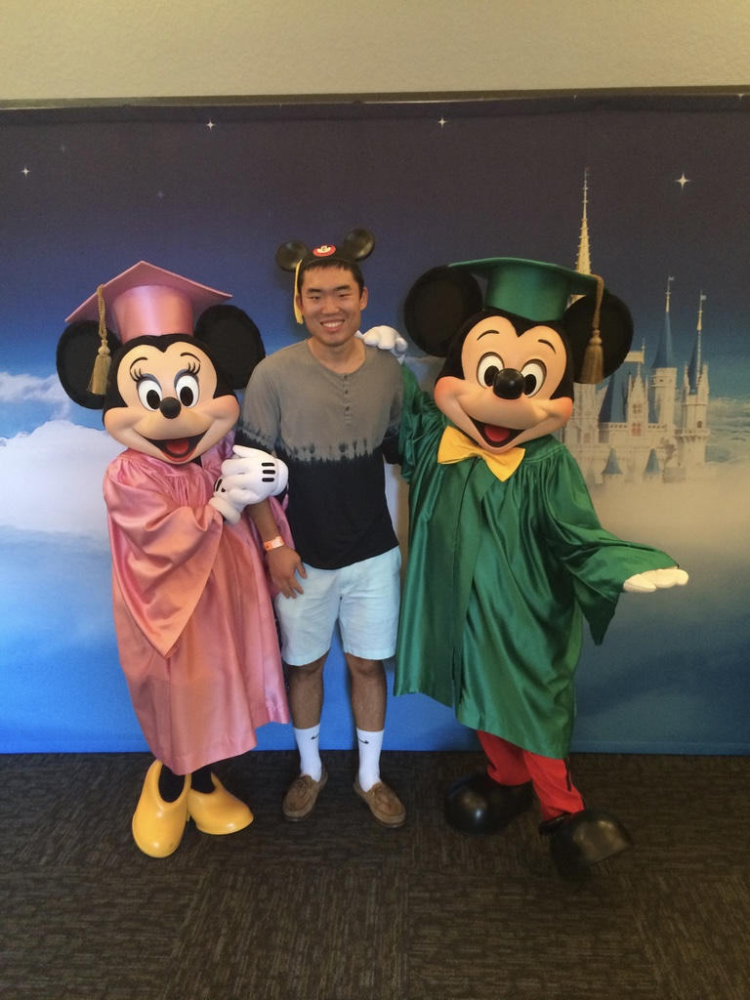
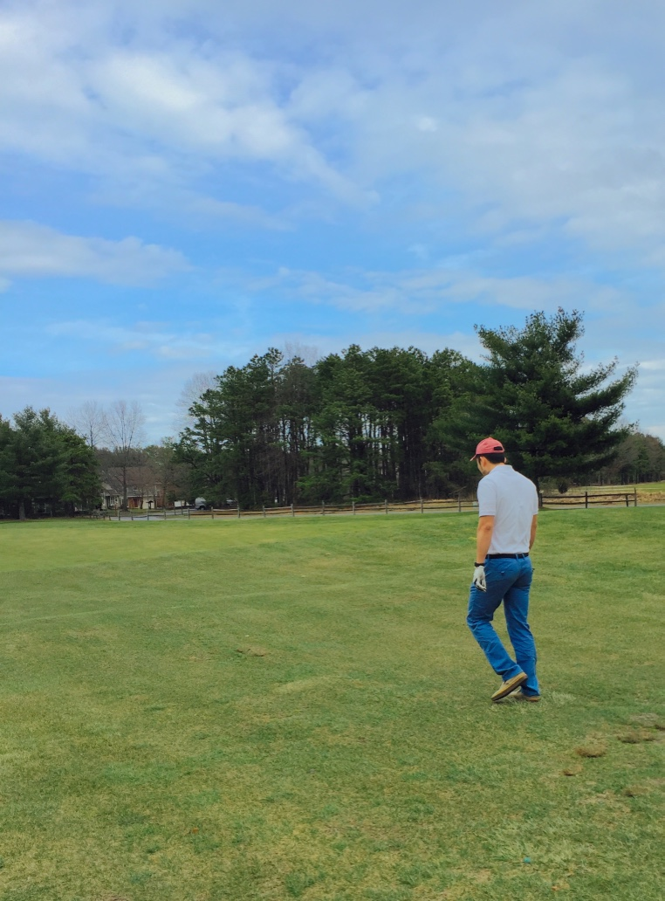

It all started in an beautiful automn's morning of 1989. I was born to a bankers family, so the first word I said is "bull-ish", according to my father. I swam for my middle school and high school. Of course, I generously gave my medals to all my competitors.
I graduated in college with my bacholer degree in Mathematics ready to change the world. Lucky enough, I was chosen to participate in the Walt Disney's Internship program in Orlando. Based on Disney, the program was extremely competitive that year and each one of us was chosen in less than a 2% acceptance rate (that is less than Harvard admission acceptance rate). I leanrt a lot from Disney. I worked within a team, led a team also worked independently to create innovation skills to better assist the company.
Post Disney time, I joined Bank of China to work as the buisness system consultant. There, I developed my business background and communication skills. My responsibilities including interview clients to set up requirements and business boundaries. I was the bridge between clients, IT vendors and other stakeholders. Occasionally, I analyze data for stakeholders by using excel and other statistical softwares. At the same time, it always in the back of my mind to further develope my academic background.
I joined Archmere Academy at the end of 2014. I taught all computer science classes including AP Computer Science A in Java and Game Design in Python. I also taught Honors Physics. The second year at Archmere, I taught Chemistry instead; of course, to the top of all computer science classes.
Besides work, I enjoy so golf, running and hiking. I love the national parks and I also love traveling.

Lincoln Investment - Business Analyst - Philadelphia, PA | Present
• Develop applications via Microsoft Access and Sharepoint; generate and invest shareholder’s report.
• Independent project coordination of systems and operations procedural development.
• Test systems enhancements including documentation and recommendation.
• Recommend appropriate method of analysis for various projects.
Bank of China - Business System Consultant - New York NY | 2014
• Global coverage with experienced professionals located across the US and China. Beijing Headquarter report.
• Assessed and managed business objectives and activities to ensure activities’ functionality and boundary.
• Extracted, constrained and organized requirements.
• Worked with the IT vendors and Finance departments to accurately deliver stakeholders’ requirements.
Bank of China - Prime Services Technology Internship - New York NY | 2013
• Utilized a variety of specific tools and toolkits for the development and support of applications.
• Planned, organized, monitored and controlled IT projects within the department to utilize technical resources to better achieve project objectives.
• Participated in defining functional designs and application systems architecture across all technologies and platforms within the department.
Walt Disney Parks & Resorts - Supply Chain Internship - Orlando FL | 2013 - 2014
• Worked with large groups and also worked independently to develop teamwork and leadership skills.
• Organized inventory in excel for data analysis, simulations and sales forecasting.
• Created a trustworthy professional working environment.
• Developed diverse views to encourage improvement and innovation.
Additional Experience
Archmere Academy - Computer Science Instructor - Claymont DE | 2014 - 2016
• Proficient in the use of computer programs and software applications to implement projects.
• Attend periodic seminars and conferences to remain updated on technology trends.
• Assist with the planning and execution of tech-based hands-on research projects.
Education
M.S. in Computer Sciences
Information Science Concentration,
Saint Joseph’s University, Philadelphia PA
December 2016
B.A in Mathematics,
University of Delaware, Newark DE
August 2013